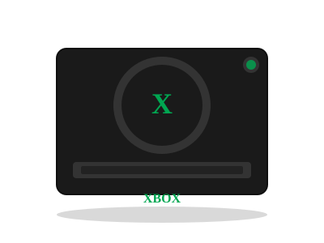

2001 年发布
Xbox
微软进军游戏市场 · 大黑盒子 · 光环诞生之地
2400万
全球销量
733MHz
CPU
DVD
光驱介质
$299
首发价格
📖 历史与背景
2001年11月15日，微软在北美发布Xbox，正式进军家用游戏主机市场。此前微软主要是一家软件公司（Windows、Office），很多人质疑"一家做软件的公司怎么能做好游戏主机？"
Xbox的核心策略是用PC思维做主机：搭载Intel Pentium III 733MHz CPU（接近PC）、NVIDIA GeForce 3级别的定制GPU、内置8GB硬盘（用于游戏存档和音乐存储）——这些硬件在当时远超PS2和GameCube。Xbox也运行在Windows 2000内核的定制版上，对PC开发者非常友好。
但Xbox最成功的资产是《光环：战斗进化》（Halo: Combat Evolved）——Bungie开发的科幻FPS。光环并非Xbox首发独占（原计划上Mac），但微软收购Bungie后将其改为Xbox独占。《光环》定义了主机FPS的操作标准（双摇杆瞄准+移动），成为Xbox的代名词和销量驱动力。
⚙️ 硬件规格
CPU
Intel Pentium III 733MHz
GPU
NVIDIA NV2A (GeForce3级)
内存
64MB DDR SDRAM
存储
8GB HDD（可存储存档和音乐）
光驱
DVD-ROM 4倍速
网络
以太网宽带口
显示
最高 480p（少数游戏720p）
手柄
Duke/S型控制器
🎮 经典游戏阵容
光环：战斗进化
2001 · FPS
Xbox代名词，重新定义主机FPS
光环2
2004 · FPS
Xbox Live在线对战，首发日破1亿小时游戏时长
忍者龙剑传
2004 · 动作
Team Ninja打造，硬核难度
星际传奇：逃离屠夫湾
2004 · 潜行
电影改编游戏天花板
神鬼寓言
2004 · RPG
Lionhead，选择与道德系统
极限竞速
2005 · 竞速
Xbox赛车游戏王牌诞生
星球大战：旧共和国武士
2003 · RPG
BioWare出品，星球大战最佳RPG
世界街头赛车
2001 · 竞速
首发护航，画面惊艳
🏆 市场表现与影响
- 全球销量：2400万台，虽不及PS2但成功为微软打开了游戏主机市场的大门
- Xbox Live：2002年推出Xbox Live在线服务——统一的玩家Tag、好友列表、语音聊天，为主机在线游戏奠定了标准
- Duke手柄：初代Xbox的"Duke"控制器因为巨大的尺寸被玩家吐槽——适合"绿巨人"的手柄，后来推出小一号的"S型"
- 内置硬盘：Xbox首次给家用主机标配内置硬盘——用于游戏存档和自定义音乐（玩家可以在竞速游戏中播放自己的CD音乐）
- 被破解与改机：Xbox运行Windows 2000简化版——改机后可以运行Xbox Media Center（XBMC），变成一台家庭影院电脑
💡 趣闻与冷知识
- Xbox的起名据说是微软内部的一个小组取的——"Xbox"代表了"DirectX Box"（DirectX是微软的游戏图形API），后来简化为Xbox
- 初代Xbox的重量高达3.86kg（8.5磅）——是第六代主机中最重的，搬动它就像搬一台小型台式电脑
- 比尔·盖茨亲自在2001年CES上宣布Xbox——他举着一个Xbox手柄的照片成为了游戏史上最著名的瞬间之一
- Xbox的改机生态非常火爆——由于内置硬盘+Windows内核，改机后的Xbox可以安装Linux、运行XBMC、甚至当作游戏模拟器
- 《光环2》的Xbox Live在线模式在运营的第一年内，玩家累计游戏时长就超过了1亿小时